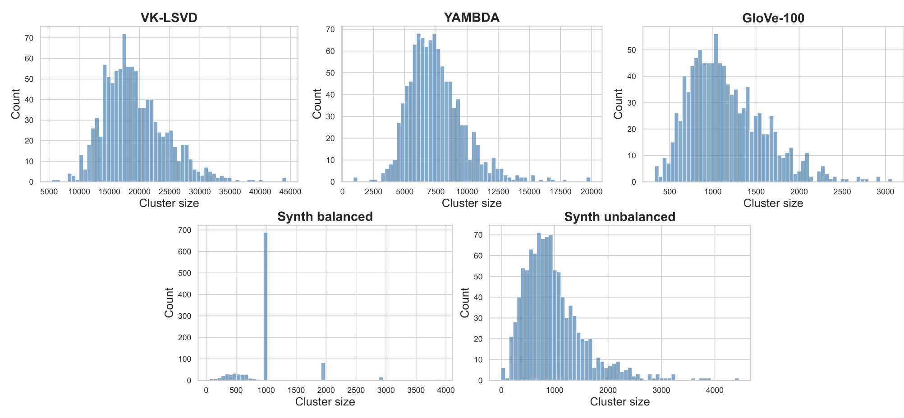
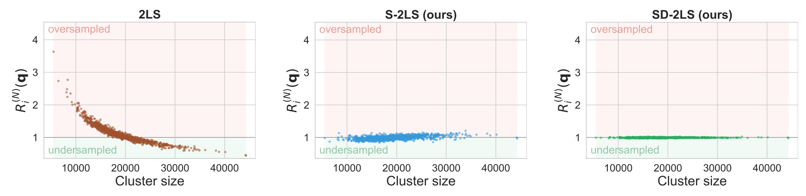
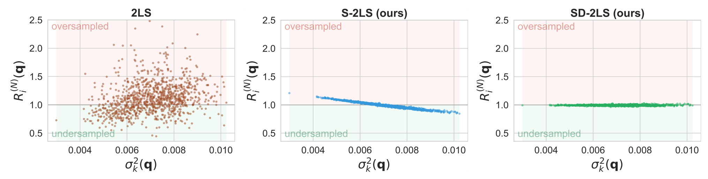
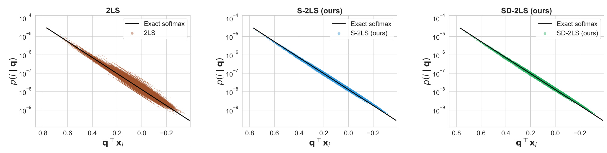
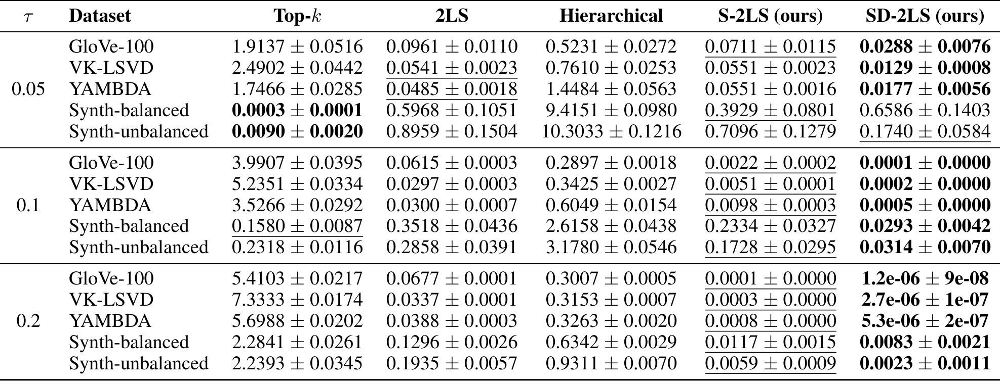
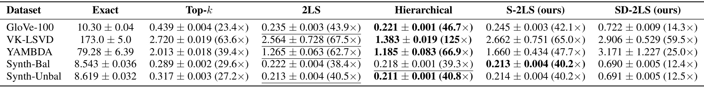

Two-Level Softmax Sampling Done Right：校正簇大小与离散度造成的采样偏差
Spotify 的 Walid Bendada 与上海交通大学巴黎卓越工程师学院的 Guillaume Salha-Galvan 研究了一个大规模推荐采样中容易被忽略的问题：先抽簇、再抽物品时，簇中心的相似度能否代表整簇概率质量。论文于 2026 年 10 月 7 日公开，提出 S-2LS 与 SD-2LS 两种校正。论文首页和作者的 arXiv comments 标注 NeurIPS 2026，本文未另行核验会议接收名单。
本文阅读的是 Two-Level Softmax Sampling Done Right: Correcting Bias from Size Imbalance and Dispersion 的 v1 版本，完整论文为 22 页，笔记记录于 2026 年 10 月 9 日。作者公开了 neurips-2ls 代码仓库；协调者已核验仓库可访问，包含 ivf_softmax、数据、构建及评测脚本，本次未运行代码复现。
按物品与查询的相似度进行 softmax 采样是机器学习的基础操作，但其成本随物品数量线性增长，使大规模精确采样难以实用。两级 softmax 通过先抽簇再抽物品降低成本，却因忽略簇大小不均衡和簇内相似度的离散程度，系统性地错配各簇概率，甚至让相同相似度的物品获得不同采样概率。
1. 背景和问题
推荐中的“采样”有独立于最近邻检索的目标。最近邻检索常把相似度最大的若干物品作为确定性结果，采样则要求物品出现频率与某个概率分布一致。给定一个用户或上下文向量，softmax 把每个物品的点积经过温度缩放和指数变换，再在全体物品上归一化。于是高相关物品更可能出现，低相关物品仍有非零概率。这种机制可以用于探索、策略动作抽取，也与大词表生成的候选选择相关。论文直接研究的是给定嵌入后的抽样分布，不负责训练用户向量或物品向量，也没有把更好的抽样分布直接等同于更高的点击率。
精确 softmax 的困难在于分母。即使最后只抽取一个物品，也必须知道所有物品的指数权重之和。对于数百万或上千万向量，每次查询都做全量点积、指数和归一化会产生很大的在线成本。嵌入维度低于候选量级只会降低每个点积的成本，不能消除遍历全部物品这一步。线下预建索引能够复用物品结构，但查询是动态的，因此不能直接预存适用于所有用户的全量归一化常数。论文要解决的正是保留相似度加权抽样和全体物品支持集，同时减少每次查询访问的物品数量。
两级 softmax 提供了非常自然的折中。把物品按嵌入空间划分成若干不交叠簇，给每簇一个中心向量。线上先用查询和全部中心的点积形成簇级 softmax，抽出一个簇，再在该簇内部执行精确 softmax。这使大量物品只在所属簇被选中后才需要评分。如果簇数和簇大小都远小于物品总数，查询成本会下降。与先找最近邻再截断的 top-k 方案相比，这个机制保留所有簇和所有物品的正概率，因而没有把索引之外的物品完全排除。不过“每个物品都可能被抽到”只是支持集性质，不保证其出现频率正确。
容易误判的地方是两层分别做 softmax 看起来已经正确归一化。每层的概率和确实都是一，但精确 softmax 分配给一个簇的总概率是该簇所有物品指数权重的和占全局指数权重和的比例。中心向量只保存平均位置，既没有保存该簇有多少物品，也没有保存这些物品沿当前查询方向的分散程度。因此，用中心的指数权重选簇只是对真实簇质量的代理，不是精确分解。第二层即便完全正确，也只能在拿到的簇预算内分配，无法弥补第一层总预算过大或过小的问题。
簇大小偏差可以通过一个直观例子理解：两个簇的中心与查询点积相同，簇内每个物品的分数也相同，一个簇有一百个物品，另一个有一万个物品。精确 softmax 应给后一簇百倍的总质量；标准两级机制却给两个中心相同的簇概率。进入小簇后，其预算只分给少量物品，因此每个小簽物品被放大；大簽物品则被压低。这种差异来自索引分区而不是物品与用户的相关性。如果物品跨簇迁移，相关分数没有变化，出现概率却可能变化，系统解释和离线分析就会受到影响。
离散度偏差更隐蔽。两簇可以有相同大小和相同平均点积，但一个簇的分数非常集中，另一个簇同时有极高分和极低分物品。由于指数函数是凸函数，高分侧的增加不会被低分侧的减少线性抵消，后者的指数权重总和通常更大。仅看平均分的中心选簇会低估这一部分质量。这里的离散度必须沿查询方向计算：同一个物品簇对一个用户可能分数集中，对另一个用户可能分数跨度很大。使用一个和查询无关的“簇很松散”标签，不能替代论文所定义的投影方差。
作者把问题分成两条互补轴线，这让修正具有清晰的解释。S-2LS 用簇大小补回第一类遗漏，保持原来的簇内抽样规则；SD-2LS 进一步利用协方差计算当前查询方向的方差，以二阶近似补回指数变换产生的质量。它们不需要重新训练打分模型，实验也共享同一套聚类分区，从而把“换了更好的向量”和“修正了采样规则”分开。对已有倒排或聚类索引的推荐链路，这使问题能够以采样模块的概率校准形式被单独测试，而不必先修改整个召回模型。
论文还涉及与层次 softmax、IVF 和 sampled softmax 的区别。IVF 的核心是用簇缩小搜索范围，未必承诺从全量 softmax 抽样；sampled softmax 通常服务训练期近似目标，本文关注固定向量上的采样行为；层次结构把多层条件概率沿路径相乘，也可能在每个节点出现质量代理误差。本文实验中的层次基线使用子树均值路由，并非把所有层次模型都证明为有偏。理解这些差异能避免将本文结论扩大成对所有近似检索或所有生成式推荐的普遍否定。
阅读时还应区分“更接近精确 softmax”和“更适合业务”。精确分布只是本文选择的参考目标，其本身是否适合长期满意度、多样性或曝光控制，取决于上游打分和业务目标。小簇过采样可能偶然提高某些长尾曝光，但那不是受控探索策略；把它校正回来也不自动保证公平性改善。本文的价值是识别并消除一种原本未被显式设计的概率扭曲，让后续探索、约束或重排从更明确的基准分布出发，业务收益需要在这个基准之外另行验证。
离线指标设计也是背景的一部分。仅评估最近邻命中率，很难看到簇级概率质量扭曲，因为大多数高分物品仍然可能出现在返回集合中；仅看采样支持集覆盖也不够，因为一个物品有极小正概率不代表其频率忠实于目标。论文将概率比和总体分布距离结合使用，前者能定位偏差与规模、方差的关联，后者衡量所有物品概率综合后的误差。两类指标互相补充，既防止把支持集完整误写成无偏，也避免只看平均距离而漏掉整簇共同偏移。对于模型比较，这比单一召回指标更契合抽样器的职责。
2. 方法
2.1 精确分解与两级采样的簇级偏差
先把目标分布写清楚，才能判断近似究竟改变了什么。原文公式（1）给定物品集合、查询向量和温度后，定义每个物品的概率为：
符号解释：$N$ 是物品总数，$x_i$ 是第 $i$ 个物品的 $d$ 维嵌入，$q$ 是同空间的查询嵌入，$\tau>0$ 是温度，$p$ 是精确参考分布。温度越小，高分与低分的权重差越大。精确采样每次需要全体点积，复杂度为 $O(dN)$；这一定义不额外假设向量长度归一化，也不限制用于生成嵌入的模型。 设簇 $C_k$ 的中心为其向量均值，原文公式（2）、（3）的两级规则可以合并呈现为：
符号解释：$K$ 是簇数量，$\mu_k$ 是簇中心，$Z_k$ 是簇内真实指数质量，$i\in C_k$。最终物品概率是两项相乘。簇内条件分布正确并不意味着簇级预算正确。簇内分布与精确 softmax 给定簇之后的条件分布相同，问题全部集中在簇选择分布。若能够用 $Z_k/\sum_\ell Z_\ell$ 抽簇，就能严格还原目标；但计算所有 $Z_k$ 又需要访问全部物品。本文寻找的是只用有限簇统计量逼近这些真实质量的方法。 原文公式（4）定义采样比，并证明同簇内所有物品的比值相同。将两层定义直接相除，可以看见物品自身指数项消去：
符号解释：$R_i^{(N)}>1$ 表示相对于精确目标过采样，小于一表示欠采样，$k$ 是 $i$ 所在簇。右侧没有单独的 $x_i$ 项，因此同簇内的物品统一被某个因子放大或缩小。簇内高低分相对比例仍然正确，跨簇预算却不正确；这也说明只优化第二层的归一化无法修复本文的错误。相同点积分数若落在不同簇，可能受到不同放大因子，因而破坏精确 softmax 的等相似度等概率性质。 为了刻画系统性偏差，作者假定物品来自混合分布，各簇对应混合成分，成分权重决定其规模。原文公式（5）给出物品数量趋于无穷时的几乎处处极限：
符号解释：$D_k$ 是第 $k$ 个成分分布，$\pi_k>0$ 是其混合权重，$c(q)$ 是只随查询变化、对各簇相同的归一化因子。附录 A 使用簇规模比例和簇内指数均值的大数定律证明这一结果。式子明确显示两处遗漏：分母的规模权重以及簇内指数期望。理论研究的是随样本量变化的随机嵌入模型，而不是宣称对任意固定索引都能得到精确修正。 若每簇中温度缩放后的投影分数是高斯变量，指数期望可由均值与方差完全确定，原文公式（6）得到：
符号解释：$\sigma_k^2(q)$ 是 $q^\top x/\tau$ 在成分 $D_k$ 内的方差。比例符号省略的是所有簇共享的常数，因此不能直接把右侧视为归一化后的概率。较小的规模权重提高采样比，较大的投影方差降低采样比。两者在真实数据中可能相关，所以未经规模校正就画方差与偏差关系，未必出现干净的单调曲线；后面的实验正是逐步控制这两个因素。
这还揭示了统计量选择的层次。簇中心估计一阶位置，簇计数估计混合成分权重，协方差估计各方向的二阶变化；三个统计量分别补偿不同信息。若聚类把多个有很不同尾部的群体放入同一簇，协方差虽然能够记录总体变化，却无法唯一确定指数均值。相同均值和方差的两个分布仍可能有不同矩母函数，因此 SD 的理论必须写出分布条件。另一方面，计数对任何固定簇都是可直接获得的精确数量，其误差来自它与中心共同构成的质量代理，而不是计数估计噪声。这解释了为何 S 的规模校正含义比较稳定，SD 的离散度校正则更依赖查询、温度和分数形态。
2.2 S-2LS：在簇选择权重中补回物品数量
大小校正的实现非常简单。原文公式（7）将簇中心指数权重乘以实际簇大小，簇内公式（8）保持原规则：
符号解释：$|C_k|$ 是簇内物品数量，其他变量沿用前文。这等价于给簇级 logit 添加 $\log|C_k|$。在线只需要读取离线存储的簇计数，不需要访问额外物品。注意这里添加的是对数计数，而不是把 logit 直接乘簇大小；两种操作导致完全不同的温度响应和概率比例。簇内仍按物品相似度抽样，不会把簇大小再次乘到第二层概率中。
原文命题四的渐近比值不再出现 $\pi_k$，说明规模项确实被消除。但簇内指数期望依然没有被完全估计，所以 S-2LS 不是一般情况下的无偏抽样器。如果两个簇拥有相同平均分但方差不同，它们的真实质量差异仍会被遗漏。这样的分阶段设计有两点好处：一是以几乎不变的在线运算结构校正最直接的规模错误，二是在实验里形成只移除规模因素的对照组，让残余方差偏差更容易观测。
标准两级方法和 S-2LS 的一次查询成本都是 $O(dK+d|C_k|)$。在簇大小接近 $N/K$ 的简化条件下，它可以写成 $O(dK+dN/K)$，选择约平方根数量的簇能得到随物品总数次线性的增长。但成本中的实际 $|C_k|$ 不能被忽略。大小校正提高了大簇被选择的概率，虽然没有添加新的运算类型，却可能改变平均访问簇大小和尾延迟。因此“相同渐近复杂度”和“每个数据集实测延迟完全相同”是两种不同命题，实验的 YAMBDA 行就提示不能简单把两者混用。
2.3 SD-2LS：以查询方向方差近似指数质量
进一步校正需要估计每簇指数期望。高斯投影的矩母函数表明，它等于平均投影指数再乘以半方差指数，因此 SD-2LS 在簇大小和中心 logit 之外加入方差项。原文公式（10）为：
符号解释：$\sigma_k^2(q)$ 是当前查询的缩放投影方差，$p_{SD\text{-}2LS}$ 表示同时进行大小和离散度校正的分布。加上的半方差项提高高方差簇的质量估计，修正指数函数凸性产生的低估。温度已包含在方差定义内，不能再把该项额外除以温度。簇内条件分布仍然相同，因此工程变化集中于第一阶段的簇级评分和离线统计保存。 方差可由每簇协方差和查询二次型计算，这也是 SD-2LS 能避免扫描全量物品的原因：
符号解释：$\Sigma_k$ 是簇内嵌入的协方差矩阵，$q^\top\Sigma_kq$ 是沿查询方向的原始分数方差，$\tau^2$ 是温度缩放所需的平方因子。协方差离线估计并缓存，在线针对每个簇求二次型。实验使用全秩协方差，不能把它当成仅存每维方差的对角近似。全协方差要求每簇约 $d^2$ 个统计量，在线成本相应为 $O(d^2K+d|C_k|)$，维度和簇数都直接影响资源需求。 原文命题六给出在高斯投影条件下恢复目标的渐近保证：
符号解释：$R_{i,SD\text{-}2LS}^{(N)}$ 是 SD-2LS 与精确物品概率之比。这需要各成分沿查询的分数分布满足相应高斯假设，并结合样本量增长后的统计极限。对有限数据、估计协方差、非高斯分数尾部，仍会有残差。高斯分布的高阶累积量为零，但高阶中心矩并不全部为零；因此应将本文二阶修正理解为高斯矩母函数或对数矩母函数的精确表达，而不是声称任何分布的二阶矩足以决定指数期望。
这个边界解释了低温风险。温度降低时，方差项按温度平方倒数放大，指数质量也更容易由少量极高分物品主导。偏态、多峰、厚尾或有限样本簇不能可靠地用高斯投影概括时，均值加半方差可能高估或低估真实对数质量。作者提到未来可以引入更高阶校正，但并未给出保持相同成本的成熟实现。也可以研究对角或低秩协方差节省内存，不过那是需要重新验证的近似，不能把本文全秩实验结果直接作为这些替代实现的性能保证。
执行时可以离线缓存对数簇大小和协方差，线上一次计算所有中心点积，再对需要的簇统计量求方差，把三项加成簇 logit。数值实现应采用减去最大 logit 的稳定 softmax，避免低温时指数溢出，这属于公式的常规实现要求而非论文另一个算法贡献。抽到簇后再访问其成员与原始向量，执行相同的条件分布。该流程也表明，索引更新时计数、中心与协方差需要保持一致版本；若新增或删除物品只更新成员列表而未更新簇统计，第一阶段质量代理可能过时。本文没有量化这种更新误差，但部署测试应把它作为可检验的条件，而不能默认为所有预统计量永久有效。
3. 实验结果
数据、共享分区与评价口径
实验覆盖五种嵌入语料：VK-LSVD 是约一千九百六十万视频、六十四维向量；YAMBDA 是约七百七十万音乐曲目、一百二十八维向量；GloVe-100 是约一百二十万词向量、一百维。两种合成集各有一百万个一百维向量，生成一千零二十四个单位球面均值，再加入标准差为零点一的各向同性高斯噪声。balanced 为成分等数量，unbalanced 用对数正态权重构造长尾成分规模。YAMBDA 和 GloVe 做向量长度归一化，视频与合成语料未归一化，因此不同数据集分数分布不能简单横向等同。
三种两级方法共享同一个 k-means 分区和中心，簇数固定为一千零二十四，避免不同索引质量干扰比较。每集随机取一千个已有嵌入作为查询，在温度零点零五、零点一、零点二分别计算分布保真度。KL 的方向是近似分布到精确分布，即 $KL(p_{approx}\Vert p_{exact})$。这个方向让 top-k 的零概率位置不会造成无穷值，但它也意味着漏掉低概率尾部未必受到很大惩罚。实验比较概率本身，不是对有限抽样序列估计点击效果，查询也不等同于完整线上用户请求分布。
top-k 保留一千个最相似物品，使用 Faiss IVFFlat 检索。层次基线为递归二分 k-means，内部节点用子树均值路由，叶子保留一千零二十四个物品再做精确 softmax；附录说明叶规模在二百五十六至四千零九十六范围内结果稳定。它既有路由近似，又有不同树结构，因此本实验不能证明所有训练式层次模型都劣于两级校正。全部延迟在 CPU 单线程、顺序查询下测量，跨三种温度取平均，并报告均值和百分之九十五置信区间，不代表 GPU、大批量或多线程生产性能。
先检查规模偏差存在的前提，实际 k-means 分区确实不均衡：

图四横轴是簇内物品数量，纵轴是该规模附近的簇数。视频簇跨越数千到四万余物品，音乐簇从很小到约两万，词向量也有明显跨度；因此使用相同簇级中心概率会在每个物品层面形成不同预算。下方的 balanced 合成集集中在约一千附近，但并非所有簇都相同：生成时的等数量混合成分经过 k-means 后，不保证被完全恢复。这个细节同时关系到理论边界，不能把“数据由高斯混合生成”直接解释成“实际分簇后每簇投影必然精确高斯”。unbalanced 合成集则有明显长尾，更接近自然语料的规模差异。图中分布说明校正面对的真实问题，也提醒线下索引分区本身是后续诊断不可省略的输入。对合成实验的解释尤其要保留实际分区这一层：如果生成成分与最终索引簇不同，理论中的成分归属前提可能只近似成立。因而应同时查看生成器和索引后的直方图，避免把均衡生成过程当成均衡索引的充分证明。
分开检查两种偏差与等分数概率

图一在视频数据、温度零点一下，对查询平均后的采样比按簇大小作图。标准两级左栏的小簇高于一、大簇低于一，呈现明显下降趋势；这符合规模项位于渐近偏差分母的理论。中栏加入大小校正后，大部分点回到一附近，右栏再加方差后更集中。应注意横轴是簇大小，纵轴是相对目标的放大倍数，不是点击率或召回率，且查询平均会隐藏某些用户方向的异常。这里的证据重点是模式改变：共享分区条件下，仅修改选簇规则就去掉与规模相关的系统偏移；它支持因果机制解释，但不能用肉眼的近乎水平直接推导有限样本完全无偏。此外，同一簇的物品共享采样比，因此点云靠近参考线并不意味着每个物品的原始概率相同，而意味着它们相对各自精确概率的放大因子接近一。把这个区别保留下来，才能同时理解簇内相关性排序和跨簇预算校准。

图二把横轴改成沿查询方向的温度缩放投影方差。左栏标准方法受大小与方差两种因素共同影响，点云散乱；中栏先做大小校正，留下更加清楚的下降关系，低方差簇略过采样，高方差簇欠采样。右栏加入半方差项，点云靠近参考线。它是论文最有解释力的对照：如果只看左栏，可能错误地认为方差没有稳定影响；S-2LS 作为中间干预移除一个混杂因素之后，另一因素就显现出来。图中的接近一仍是该语料和温度的实证结果，不是对所有温度、簇划分或分数形态的保证。尤其在下面的低温合成案例中，二阶质量代理会出现不如标准方法的均值。三个面板共用相同数据条件，因而中间面板不仅是一个性能结果，也是用于隔离机制的诊断工具。复现时应保留这一中间对照，而不是只输出标准方法和双校正的最终曲线，否则很难区分误差下降来自计数项还是方差项。

图三固定一个查询，横轴是物品点积，纵轴是对数概率，黑线是精确 softmax。左栏同一横坐标附近形成较厚的概率带，说明相似度近似相同的物品因为不同簇预算而得到不同概率。大小校正后的中栏带宽缩窄，双校正后的右栏更贴近参考曲线。这里横轴按原图从高分到低分排列，不能把视觉上的下降误读成概率随相似度减少而增加。该图回答了业务上最直观的问题：分区是否引入与相关性无关的出现频率差异。它没有展示每次抽样序列，也没有衡量实际曝光公平性；要转化为曝光分配指标，还需要真实用户查询、其他过滤条件和后续排序阶段的联合评测。黑线以同一全局归一化常数生成，所以不同簇中的点只要横轴相同，其目标概率就应相同。观察垂直偏离而不是只观察曲线整体单调性，才能准确检查论文提出的不变性问题，并把概率误差与相关性误差分开。
完整主结果、低温反例与置信区间

表一给出五种近似方法、五个数据集和三种温度的完整结果。自然语料上，SD-2LS 在三种温度的均值都是最低。以温度零点一为例，视频的标准两级 KL 为零点零二九七，大小校正为零点零零五一，双校正为零点零零零二；音乐相应为零点零三零零、零点零零九八、零点零零零五；词向量相应为零点零六一五、零点零零二二、零点零零零一。这样的结果同时支撑两个步骤：大小修正已经移除相当一部分偏差，方差修正进一步降低残余。数值较小且保留四位小数时出现零点零零零零置信区间，只是报告精度限制，不是实验没有波动。表格中粗体和下划线表示该行按均值排序的最好和次好结果，并不自动包含显著性检验。比较时必须结合置信区间，且一个数据集三种温度是三个目标分布，不能将不同温度的绝对数值相减当作同一目标上的性能提升。
在温度零点二的自然语料上，SD 的 KL 更低，词向量是一点二乘十的负六次方，视频是二点七乘十的负六次方，音乐是五点三乘十的负六次方，而标准两级仍在百分之几量级。温度较高时分布更平坦，top-k 丢失的尾部质量更明显，其 KL 反而升高。这个比较主要说明保持完整支持集对平坦分布有价值，并不表示 top-k 在所有任务都不合适。如果目标本身就是截断分布，或者业务主动禁止低分候选，那么其与全量 softmax 的差距可能是设计选择，而不是必须修正的错误。
不能照搬作者“持续更优”表述：温度零点零五、balanced 合成集上，SD 为 0.6586±0.1403，标准两级为 0.5968±0.1051，S 为 0.3929±0.0801，top-k 为 0.0003±0.0001。双校正的均值比标准两级更大，两个区间也有重叠，所以既不能说 SD 每行都优于标准方法，也不能仅凭均值说它显著变差。S 在同温度视频上为 0.0551，标准两级为 0.0541；音乐上 S 为 0.0551，标准两级为 0.0485。大小校正同样没有逐行支配原方法。它去掉一类理论偏差，剩余近似误差和有限样本结构仍可能让总体 KL 不下降。
合成数据在低温时 top-k 极好，说明精确目标可能集中在有限的高分物品，截断损失很小；温度提高后，其误差上升，SD 的优势才更清楚。unbalanced 集在零点零五下 top-k 也以 0.0090 得到最低均值，SD 为 0.1740，标准两级为 0.8959。这给工程选择一个更细的判断：完整支持集需求、温度、分数尾部、分区结构与质量预算共同决定适用性，不能只凭“天然语料上的最低 KL”作无条件替换。由于三种方法共用 k-means，而合成成分不必被恢复，低温反例不与高斯成分加正确归属下的渐近定理直接矛盾。
延迟表显示的真实资源交换

表二是附录中的关键效率证据，单位毫秒，跨三种温度平均。视频标准两级为 2.564±0.728，S 为 2.662±0.751，SD 为 2.906±0.529，相对于精确的 173.0 毫秒仍有显著加速。音乐标准两级为 1.265±0.063，S 为 1.660±0.434，SD 为 3.171±1.227；SD 相对标准两级约二点五一倍。词向量标准两级为 0.235±0.003，S 为 0.245±0.003，SD 为 0.722±0.009；SD 约三点零七倍。它们仍分别相对精确采样取得二十五倍和十四点三倍加速，但“比精确快很多”与“相对已有采样器额外开销小”必须分开评估。速度比的参考是全量精确方法，括号中的加速倍数也按照这个参考计算；如果团队当前已经部署两级方法，评估迁移成本则要重新以两级延迟作分母。这两种比较回答不同工程问题，表格同时保留原始毫秒值使其能够被重新计算。
balanced 与 unbalanced 合成集的 SD 为零点六九零和零点六九一毫秒，标准两级为零点二二二和零点二一三毫秒，也在约三倍量级。层次基线往往很快，例如视频为一点三八三毫秒，但它的 KL 较高，因而速度与质量需要同时看。原文正文用较高维语料一点二至一点八倍概括额外开销，可是音乐的一百二十八维结果已经不落在该概括内；应以表格的具体数据为准。置信区间较宽也提示某些数据集的计时不稳定，论文未给出线上高分位延迟、缓存命中、并发吞吐或索引更新期间的性能。
本实验没有对协方差近似、不同簇数或在线业务进行完整消融，也没有展示冷启动新增物品的统计更新误差。结果最稳固的部分是：在固定索引和这些查询样本上，校正确实显著改善多数目标分布保真度。较弱的部分是把它迁移到长期运行系统后，全协方差内存、查询尾延迟、分数漂移及业务回报的共同表现。复现应首先核对温度和 KL 方向，再核对共享分区与归一化，最后测不同资源条件；否则数值变化可能来自评测协议不同，而不是理论校正失效。
4. 总结
这篇论文最有价值的贡献是把两级采样误差定位到真实簇质量的近似。簇内条件概率可以完全正确，簇级预算仍然会因忽略规模与指数凸性而错配。采样比推导说明误差以整簇乘性因子的形式作用，解释了为何相同相似度的物品跨簇后可能出现不同频率。大小修正对应物品数量，方差修正对应查询方向的二阶指数质量，两者有明确的统计解释，也可以利用已经存在的聚类索引实施。这种分解比只看总体 KL 更有诊断力，因为它让团队能知道误差来自哪个阶段以及是否真的移除了目标因素。
对推荐工程的第一点启发是审核选簇概率的语义。若产品希望从全量 softmax 抽取探索候选，就应比较簇预算与真实指数质量，而不是只检查簇内归一化或检索准确率。第二点启发是把规模、方差与查询方向联合测量，保留不同温度的分层诊断。第三点启发是把支持集需求当成显式指标：top-k 可以很快，在尖锐分布下也可能非常接近目标，但永久排除尾部与近似概率不准确是不同问题。业务要先明确探索策略需要哪一种性质，再比较计算方案。
对应的三项风险也相当具体。第一，高斯投影加渐近条件的保证不能推广为任意有限簇无偏，低温 balanced 合成集已有反例均值。第二，全协方差带来的维度平方存储和运算开销不能被“物品数更大”自动豁免，音乐和词向量表格显示已有标准采样器到 SD 的额外成本约二点五到三倍。第三，保真度指标只衡量相对于指定目标分布的差距，未证明在线满意度、点击、收益或多样性提升。若上游目标包含偏差，忠实还原它也可能保留甚至扩大业务问题，仍需独立的效果评估。
一个合理的后续路线是先在现有分区上做只读离线比较，固定查询、温度和候选过滤，算出精确簇质量、两类偏差及异常簇列表。然后对 S 和 SD 分别记录 KL、支持集覆盖、平均与高分位耗时、簇大小相关的耗时变化以及统计量内存。针对低温、厚尾和多峰投影单独检查，避免平均指标掩盖少量最重要查询的失败。如果全协方差资源过高，再测试对角或低秩代理，并把其结果作为新的实验而不是引用本文数字。最后才在业务策略许可下验证用户回报，并将抽样机制与后续过滤、重排影响分开。
作者代码已经有明确入口，但本次只完成论文阅读和证据核验，没有运行构建、下载数据或重现结果。原始附录还逐数据集提供了规模、方差和等相似度概率图，支持主文视频案例之外的机制复核；笔记保留完整图表审计，并在此用覆盖全部数据集的主表约束结论。后续最值得跟进的是低温投影高阶形态与残差的关系，以及不同维度和协方差压缩下的成本变化，前者对应准确性边界，后者对应可部署性。复现时应优先确认固定一千零二十四簇、一千查询、CPU 单线程、全秩协方差、近似到精确 KL 方向，以及自然数据的向量归一化差异。会议标注保持作者自报口径，后续可以另查官方名单。最终判断是把 S-2LS 作为低额外运算成本的规模校正候选，把 SD-2LS 作为资源换取分布保真度的候选；已有表格支持其在自然语料上的效果，但也明确要求按温度和数据形态验证，而不是照搬“无条件替换”的结论。